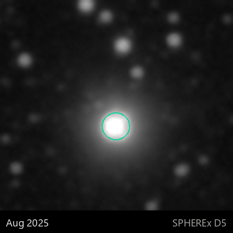

Roter Zwergstern · M4
Barnards Stern
Der Stern, dessen Ort am Himmel sich am schnellsten ändert: 10.4 Bogensekunden pro Jahr, etwa 1.7 SPHEREx-Pixel.

Auch Sterne wandern, nur sehr viel langsamer. Von allen Sternen ändert dieser seinen Ort am Himmel am schnellsten: weniger als zwei SPHEREx-Pixel pro Jahr. Die Nummern zeigen, was das Werkzeug daraus macht.
Worauf zu achten ist
Die Bilder durchlaufen drei Besuche: Der Stern springt jedes Mal um etwa ein Pixel nach Norden, entlang der gepunkteten Linie. Sein Kern ist hell genug, um die kurzwelligen Detektoren zu sättigen; deshalb liefert D5 die sauberste Ansicht. Die Tabelle vergleicht die in diesen Bildern gemessene Verschiebung mit der Vorhersage des Katalogs.
SPHEREx hat 360 Aufnahmen dieser Stelle, vom 15. August 2025 bis zum 22. September 2026.
Barnards Stern in Chronosphere öffnen
Quellen: SPHEREx, NASA/JPL-Caltech, IRSA · SIMBAD · Gaia DR3 · Wikipedia